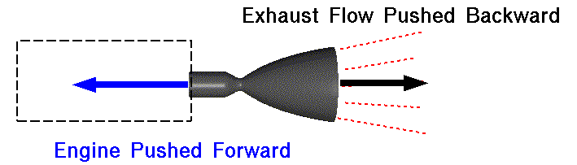

Rockets, the epitome of human innovation and exploration, harness the fundamental principle of Newton's third law of motion to propel themselves through the vast expanse of space. At their core, rockets produce thrust through the controlled expulsion of high-speed exhaust gases.
Newtons third law can be defined as: for every action there is an equal and opposite reaction. What this means is that when a force is applied to an object, the object applies the same force back.
Force
mass
acceleration
Force is defined as the mass of the object multiplied by its acceleration. A rocket engine works by igniting fuels and then accelerating the hot gasses out of the end of the nozzle. When the gas accelerates out of the back of the engine it gains a force acting on it in the direction of motion. This force cannot come from nothing, so to balance this out an equal force acts on the engine.
So a different way of thinking about it is that as the gasses are leaving the engine, they gain speed (accelerate) by pushing against the engine. This pushing against the engine is what generates thrust and pushes a rocket to space.
There is a misconception that rockets produce thrust by "pushing" themselves off the ground. This is incorrect, as we've talked about, engines push themselves away. This is how rockets can work in space where there is no ground or air to push against.